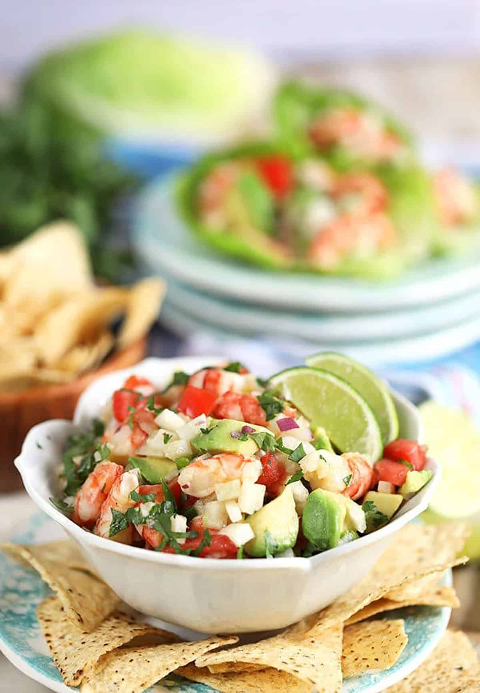

Shrimp Ceviche with Sweet Curry
Shrimp Ceviche with Sweet Curry

This Easy Shrimp Ceviche recipe is the best dish for summer. Cool, light and refreshing, easy Shrimp Ceviche is made with just a few simple ingredients creating a flavor explosion for your tastebuds. Fresh cooked shrimp, crisp veggies, buttery avocado are all tossed in a light dressing for an easy dish that is great as a dip or a light summer salad.
The traditional shrimp ceviche recipe has never before had curry in it. My dad taught me how to make this ceviche recipe but with a touch of sweet brown sugar and a spicy jamaican curry. You'll never be able to eat it any other way after you try it this way!
Ingredients
- 1 pound salad shrimp, peeled and deveined
- 1/4 cup fresh lime juice, about 2 limes
- fresh lemon juice, 1 lemon
- 5 roma tomatoes
- 2 whole jalapeno peppers, seeds and all
- 1/2 cup fresh cilantro
- 1 whole white onion
- kosher salt and black pepper
- garlic powder
- minced garlic, fresh or refrigerated
- Jamaican Curry Powder, as much as you'd like
- 1 tablespoon light brown sugar
- 2 tablespoons of butter, I use the olive oil plant butter
Steps
- Dump the shrimp in a large bowl and wash under warm water with some salt and lemon juice.
- Finely chop/dice all your vegetables and put them into a large bowl
- Add all the wet and dry ingredients(except for the butter, brown sugar, and curry) to your bowl with all your chopped veggies
- Heat a skillet on medium high and add your shrimp, butter, brown sugar, and curry.
- Cook the shrimp until the butter and brown sugar turns into a crispy coating, do not flip your shrimp the entire time. Put a lid on the skillet and let the shrimp soak up the butter/curry marinade.
- Once Shrimp is done cookimg and crispy, scrape the shrimp into the bowl with all other ingredients.
- Put your ceviche in the refrigerator and wait for it to get cold, once cold it is ready to serve.